CV |
Google Scholar |
LinkedIn| |
I am an applied AI researcher @ Camtek. My Ph.D. went under the supervision of Prof. Dan Feldman, at the Robotics & Big Data Labs, Computer Science Department at the University of Haifa, and under the supervision of Prof. Roee Diamant, at the Underwater Acoustic & Navigation Lab, School of Marine Sciences at the University of Haifa. My main research interests are machine learning, deep learning, big data, and robotics. My passion lies in handling real-world problems and providing practical solutions for boosting state-of-the-art solvers via approximation algorithms and computational geometry. |
|
Camtek |
DataHeroes |
CSAIL MIT |
Haifa University |
|---|
Publications
-
Practical 0.385-Approximation for Submodular Maximization Subject to a Cardinality Constraint
Murad Tukan, Loay Mualem, Moran Feldman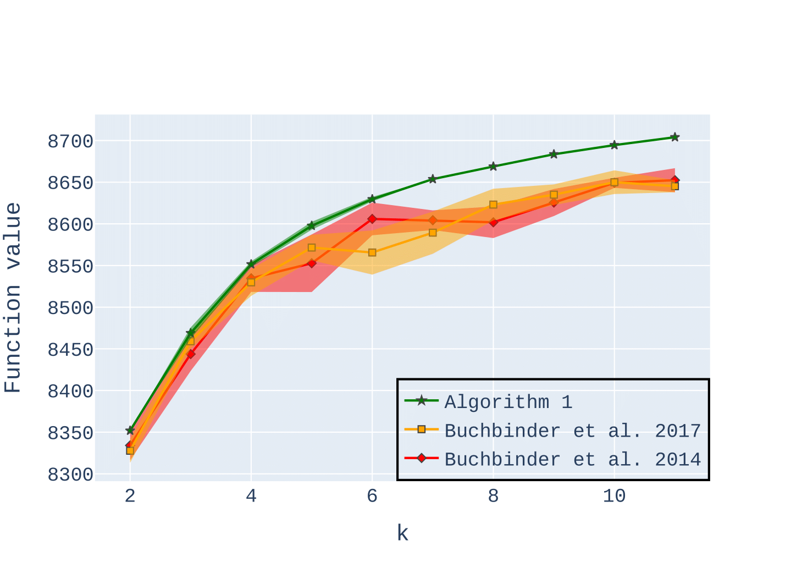Non-monotone constrained submodular maximization plays a crucial role in various machine learning applications. However, existing algorithms often struggle with a trade-off between approximation guarantees and practical efficiency. The current state-of-the-art is a recent 0.401-approximation algorithm, but its computational complexity makes it highly impractical. The best practical algorithms for the problem only guarantee 1/e-approximation. In this work, we present a novel algorithm for submodular maximization subject to a cardinality constraint that combines a guarantee of 0.385-approximation with a low and practical query complexity of O(n+k²). Furthermore, we evaluate the empirical performance of our algorithm in experiments based on various machine learning applications, including Movie Recommendation, Image Summarization, and more.
-
An Efficient Drifters Deployment Strategy to Evaluate Water Current Velocity Fields
Murad Tukan, Eli Biton, Roee Diamant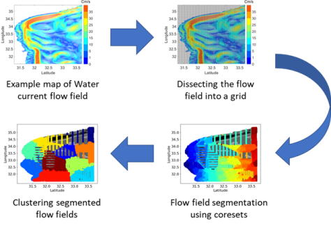Water current prediction is essential for understanding ecosystems, and to shed light on the role of the ocean in the global climate context. Solutions vary from physical modeling, and long-term observations, to short-term measurements. In this paper, we consider a common approach for water current prediction that uses Lagrangian floaters for water current prediction by interpolating the trajectory of the elements to reflect the velocity field. Here, an important aspect that has not been addressed before is where to initially deploy the drifting elements such that the acquired velocity field would efficiently represent the water current. To that end, we use a clustering approach that relies on a physical model of the velocity field. Our method segments the modeled map and determines the deployment locations as those that will lead the floaters to ’visit’ the center of the different segments. This way, we validate that the area covered by the floaters will capture the in-homogeneously in the velocity field. Exploration over a dataset of velocity field maps that span over a year demonstrates the applicability of our approach, and shows a considerable improvement over the common approach of uniformly randomly choosing the initial deployment sites. Finally, our implementation code can be found in [1].
-
Bridging the Gap Between General and Down-Closed Convex Sets in Submodular Maximization
Loay Mualem, Murad Tukan, Moran Feldman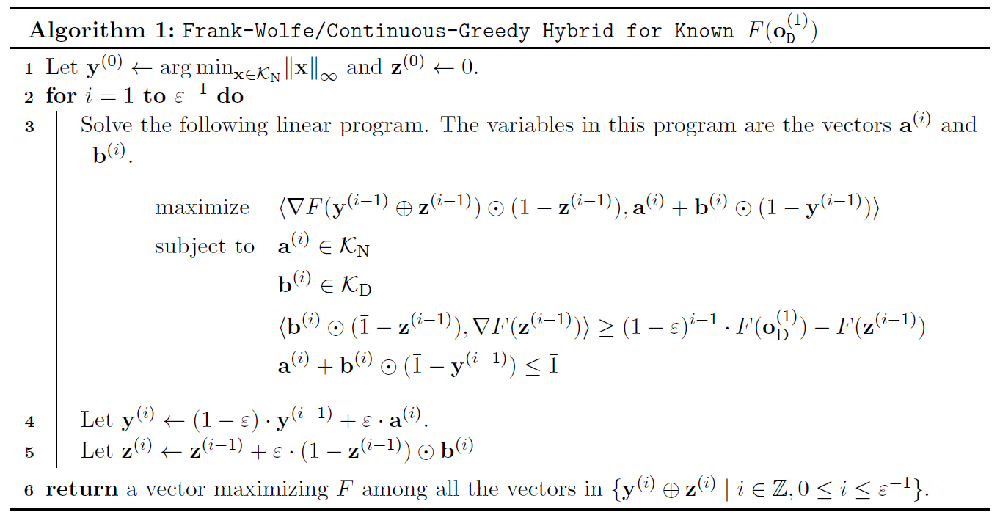Optimization of DR-submodular functions has experienced a notable surge in significance in recent times, marking a pivotal development within the domain of non-convex optimization. Motivated by real-world scenarios, some recent works have delved into the maximization of non-monotone DR-submodular functions over general (not necessarily down-closed) convex set constraints. Up to this point, these works have all used the minimum \ell_\infty norm of any feasible solution as a parameter. Unfortunately, a recent hardness result due to Mualem \& Feldman~\cite{mualem2023resolving} shows that this approach cannot yield a smooth interpolation between down-closed and non-down-closed constraints. In this work, we suggest novel offline and online algorithms that provably provide such an interpolation based on a natural decomposition of the convex body constraint into two distinct convex bodies: a down-closed convex body and a general convex body. We also empirically demonstrate the superiority of our proposed algorithms across three offline and two online applications.
-
On the Size and Approximation Error of Distilled Datasets
Alaa Maalouf*, Murad Tukan*, Noel Loo, Ramin Hasani, Mathias Lechner, Daniela Rus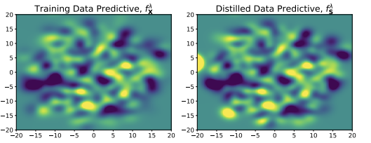Dataset Distillation is the task of synthesizing small datasets from large ones while still retaining comparable predictive accuracy to the original uncompressed dataset. Despite significant empirical progress in recent years, there is little understanding of the theoretical limitations/guarantees of dataset distillation, specifically, what excess risk is achieved by distillation compared to the original dataset, and how large are distilled datasets? In this work, we take a theoretical view on kernel ridge regression (KRR) based methods of dataset distillation such as Kernel Inducing Points. By transforming ridge regression in random Fourier features (RFF) space, we provide the first proof of the existence of small (size) distilled datasets and their corresponding excess risk for shift-invariant kernels. We prove that a small set of instances exists in the original input space such that its solution in the RFF space coincides with the solution of the original data. We further show that a KRR solution can be generated using this distilled set of instances which gives an approximation towards the KRR solution optimized on the full input data. The size of this set is linear in the dimension of the RFF space of the input set or alternatively near linear in the number of effective degrees of freedom, which is a function of the kernel, number of data points, and the regularization parameter $\lambda$. The error bound of this distilled set is also a function of . We verify our bounds analytically and empirically.
-
Provable Data Subset Selection for Efficient Neural Networks Training
Murad Tukan, Samson Zhou, Alaa Maalouf, Daniela Rus, Vladimir Braverman, Dan Feldman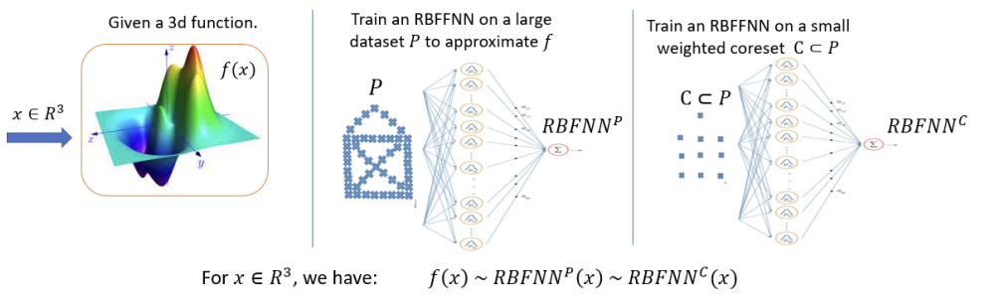Radial basis function neural networks (RBFNN) are well-known for their capability to approximate any continuous function on a closed bounded set with arbitrary precision given enough hidden neurons. In this paper, we introduce the first algorithm to construct coresets for RBFNNs, i.e., small weighted subsets that approximate the loss of the input data on any radial basis function network and thus approximate any function defined by an RBFNN on the larger input data. In particular, we construct coresets for radial basis and Laplacian loss functions. We then use our coresets to obtain a provable data subset selection algorithm for training deep neural networks. Since our coresets approximate every function, they also approximate the gradient of each weight in a neural network, which is a particular function on the input. We then perform empirical evaluations on function approximation and dataset subset selection on popular network architectures and data sets, demonstrating the efficacy and accuracy of our coreset construction.
-
AutoCoreset: An Automatic Practical Coreset Construction Framework
Alaa Maalouf*, Murad Tukan*, Vladimir Braverman, Daniela Rus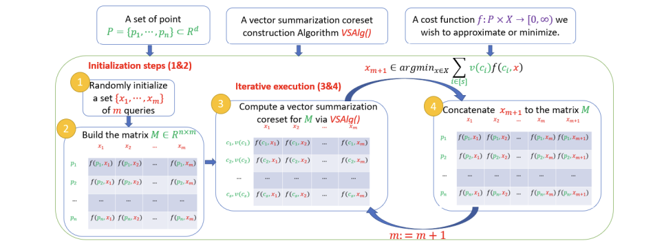A coreset is a small weighted subset of an input set that approximates its loss function, for a given set of queries. Coresets became prevalent in machine learning as they have shown to be advantageous for many applications. Unfortunately, coresets are constructed in a problem-dependent manner, where for each problem, a new coreset construction algorithm is suggested, taking years to prove its correctness. Even the generic frameworks require additional (problem-dependent) computations or proofs to be done by the user. Besides, many problems do not have (provable) small coresets, limiting their applicability. To this end, we suggest an automatic practical framework for constructing coresets, which requires (only) the input data and the desired cost function from the user, without the need for any other task-related computation to be done by the user. To do so, we reduce the problem of approximating a loss function to an instance of vector summation approximation, where the vectors we aim to sum are loss vectors of a specific subset of the queries, such that we aim to approximate the image of the function on this subset. We show that while this set is limited, the coreset is quite general. An extensive experimental study on various machine learning applications is also conducted. Finally, we provide a “plug and play" style implementation, proposing a user-friendly system that can be easily used to apply coresets for many problems. We believe that these contributions enable future research and easier use and applications of coresets.
-
Pruning Neural Networks via Coresets and Convex Geometry: Towards No Assumptions
Murad Tukan*, Loay Mualem*, Alaa Maalouf*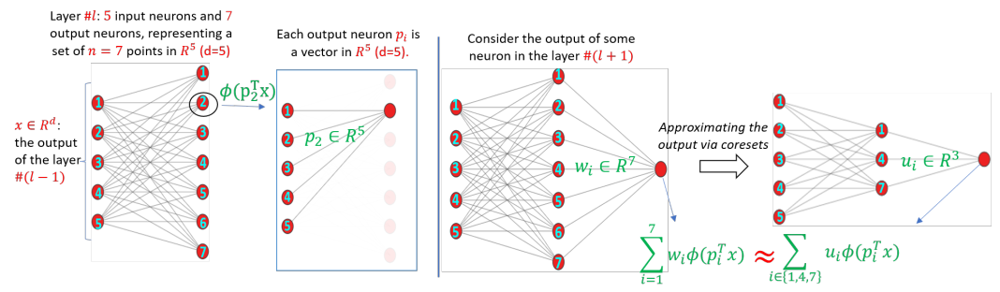Pruning is one of the predominant approaches for compressing deep neural networks (DNNs). Lately, coresets (provable data summarizations) were leveraged for pruning DNNs, adding the advantage of theoretical guarantees on the trade-off between the compression rate and the approximation error. However, coresets in this domain were either data dependant or generated under restrictive assumptions on both the model's weights and inputs. In real-world scenarios, such assumptions are rarely satisfied, limiting the applicability of coresets. To this end, we suggest a novel and robust framework for computing such coresets under mild assumptions on the model's weights and without any assumption on the training data. The idea is to compute the importance of each neuron in each layer with respect to the output of the following layer. This is achieved by an elegant combination of L\"{o}wner ellipsoid and Caratheodory theorem.Our method is simultaneously data-independent, applicable to various networks and datasets (due to the simplified assumptions), and theoretically supported. Experimental results show that our method outperforms existing coreset based neural pruning approaches across a wide range of networks and datasets. For example, our method achieved a 62% compression rate on ResNet50 on ImageNet with 1.09% drop in accuracy.
-
Obstacle Aware Sampling for Path Planning
Murad Tukan , Alaa Maalouf, Dan Feldman, Roi Poranne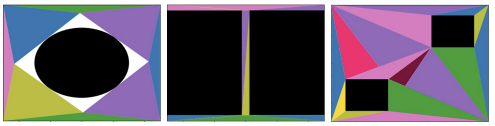Many path planning algorithms are based on sampling the state space. While this approach is very simple, it can become costly when the obstacles are unknown, since samples hitting these obstacles are wasted. The goal of this paper is to efficiently identify obstacles in a map and remove them from the sampling space. To this end, we propose a pre-processing algorithm for space exploration that enables more efficient sampling. We show that it can boost the performance of other space sampling methods and path planners. Our approach is based on the fact that a convex obstacle can be approximated provably well by its minimum volume enclosing ellipsoid (MVEE), and a non-convex obstacle may be partitioned into convex shapes. Our main contribution is an al-gorithm that strategically finds a small sample, called the active-coreset, that adaptively samples the space via membership-oracle such that the MVEE of the coreset approximates the MVEE of the obstacle. Experimental results confirm the ef-fectiveness of our approach across multiple planners based on rapidly-exploring random trees, showing significant improve-ment in terms of time and path length.
-
New Coresets for Projective Clustering and Applications
Murad Tukan, Xuan Wu, Samson Zhou, Vladimir Braverman, Dan Feldman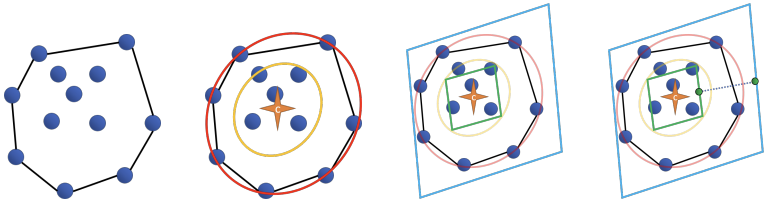(j,k)-projective clustering is the natural generalization of the family of k-clustering and j-subspace clustering problems. Given a set of points P in Rd, the goal is to find k flats of dimension j, i.e., affine subspaces, that best fit P under a given distance measure. In this paper, we propose the first algorithm that returns an L∞ coreset of size polynomial in d. Moreover, we give the first strong coreset construction for general M-estimator regression. Specifically, we show that our construction provides efficient coreset constructions for Cauchy, Welsch, Huber, Geman-McClure, Tukey, L1−L2, and Fair regression, as well as general concave and power-bounded loss functions. Finally, we provide experimental results based on real-world datasets, showing the efficacy of our approach.
-
Coresets for Data Discretization and Sine Wave Fitting
Alaa Maalouf, Murad Tukan, Eric Price, Daniel M. Kane, Dan Feldman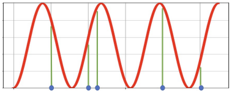(j,k)-projective clustering is the natural generalization of the family of k-clustering and j-subspace clustering problems. Given a set of points P in Rd, the goal is to find k flats of dimension j, i.e., affine subspaces, that best fit P under a given distance measure. In this paper, we propose the first algorithm that returns an L∞ coreset of size polynomial in d. Moreover, we give the first strong coreset construction for general M-estimator regression. Specifically, we show that our construction provides efficient coreset constructions for Cauchy, Welsch, Huber, Geman-McClure, Tukey, L1−L2, and Fair regression, as well as general concave and power-bounded loss functions. Finally, we provide experimental results based on real-world datasets, showing the efficacy of our approach.
-
On Coresets for Support Vector Machines
Murad Tukan, Cenk Baykal, Dan Feldman, Daniela Rus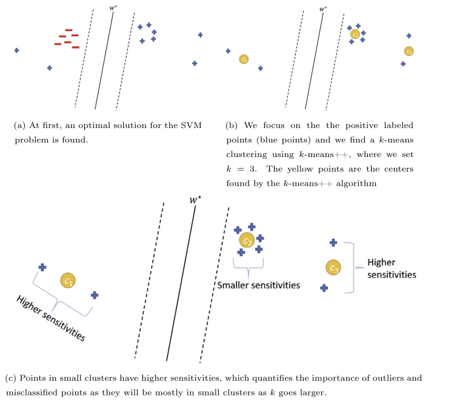We present an efficient coreset construction algorithm for large-scale Support Vector Machine (SVM) training in Big Data and streaming applications. A coreset is a small, representative subset of the original data points such that a model trained on the coreset is provably competitive with that trained on the original data set. Since the size of the coreset is generally much smaller than the original set, our preprocess-then-train scheme has potential to lead to significant speedups when training SVM models. We prove lower and upper bounds on the size of the coreset required to obtain small data summaries for the SVM problem. As a corollary, we show that our algorithm can be used to extend the applicability of any off-the-shelf SVM solver to streaming, distributed, and dynamic data settings. We evaluate the performance of our algorithm on real-world and synthetic data sets. Our experimental results reaffirm the favorable theoretical properties of our algorithm and demonstrate its practical effectiveness in accelerating SVM training.
-
Sets Clustering
Ibrahim Jubran*, Murad Tukan*, Alaa Maalouf*, Dan Feldman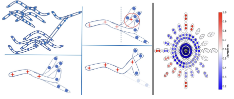The input to the \emph{sets-k-means} problem is an integer k≥1 and a set P={P1,⋯,Pn} of fixed sized sets in Rd. The goal is to compute a set C of k centers (points) in Rd that minimizes the sum ∑P∈Pminp∈P,c∈C∥p−c∥2 of squared distances to these sets. An \emph{ε-core-set} for this problem is a weighted subset of P that approximates this sum up to 1±ε factor, for \emph{every} set C of k centers in Rd. We prove that such a core-set of O(log2n) sets always exists, and can be computed in O(nlogn) time, for every input P and every fixed d,k≥1 and ε∈(0,1). The result easily generalized for any metric space, distances to the power of z>0, and M-estimators that handle outliers. Applying an inefficient but optimal algorithm on this coreset allows us to obtain the first PTAS (1+ε approximation) for the sets-k-means problem that takes time near linear in n. This is the first result even for sets-mean on the plane (k=1, d=2). Open source code and experimental results for document classification and facility locations are also provided.
-
Coresets for Near-Convex Functions
Murad Tukan, Alaa Maalouf, Dan Feldman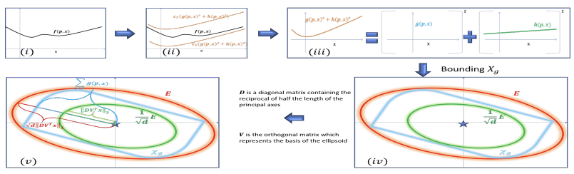Coreset is usually a small weighted subset of n input points in Rd, that provably approximates their loss function for a given set of queries (models, classifiers, etc.). Coresets become increasingly common in machine learning since existing heuristics or inefficient algorithms may be improved by running them possibly many times on the small coreset that can be maintained for streaming distributed data. Coresets can be obtained by sensitivity (importance) sampling, where its size is proportional to the total sum of sensitivities. Unfortunately, computing the sensitivity of each point is problem dependent and may be harder to compute than the original optimization problem at hand. We suggest a generic framework for computing sensitivities (and thus coresets) for wide family of loss functions which we call near-convex functions. This is by suggesting the f-SVD factorization that generalizes the SVD factorization of matrices to functions. Example applications include coresets that are either new or significantly improves previous results, such as SVM, Logistic regression, M-estimators, and ℓz-regression. Experimental results and open source are also provided.
Preprints
-
Dataset Distillation Meets Provable Subset Selection
Murad Tukan*, Alaa Maalouf*, Margarita Osadchy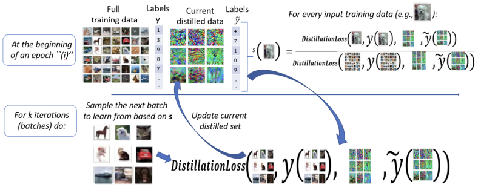Deep learning has grown tremendously over recent years, yielding state-of-the-art results in various fields. However, training such models requires huge amounts of data, increasing the computational time and cost. To address this, dataset distillation was proposed to compress a large training dataset into a smaller synthetic one that retains its performance -- this is usually done by (1) uniformly initializing a synthetic set and (2) iteratively updating/learning this set according to a predefined loss by uniformly sampling instances from the full data. In this paper, we improve both phases of dataset distillation: (1) we present a provable, sampling-based approach for initializing the distilled set by identifying important and removing redundant points in the data, and (2) we further merge the idea of data subset selection with dataset distillation, by training the distilled set on ``important'' sampled points during the training procedure instead of randomly sampling the next batch. To do so, we define the notion of importance based on the relative contribution of instances with respect to two different loss functions, i.e., one for the initialization phase (a kernel fitting function for kernel ridge regression and K-means based loss function for any other distillation method), and the relative cross-entropy loss (or any other predefined loss) function for the training phase. Finally, we provide experimental results showing how our method can latch on to existing dataset distillation techniques and improve their performance.
-
Orbslam3-Enhanced Autonomous Toy Drones: Pioneering Indoor Exploration
Murad Tukan, Fares Fares, Yotam Grufinkle, Ido Talmor, Loay Mualem, Vladimir Braverman, Dan Feldman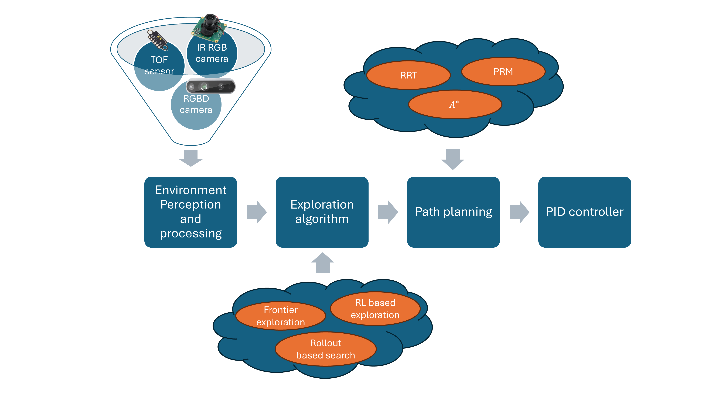Navigating toy drones through uncharted GPSdenied indoor spaces poses significant difficulties due to their reliance on GPS for location determination. In such circumstances, the necessity for achieving proper navigation is a primary concern. In response to this formidable challenge, we introduce a real-time autonomous indoor exploration system tailored for drones equipped with a monocular RGB camera. Our system utilizes ORB-SLAM3, a state-of-the-art vision feature-based SLAM, to handle both the localization of toy drones and the mapping of unmapped indoor terrains. Aside from the practicability of ORB-SLAM3, the generated maps are represented as sparse point clouds, making them prone to the presence of outlier data. To address this challenge, we propose an outlier removal algorithm with provable guarantees. Furthermore, our system incorporates a novel exit detection algorithm, ensuring continuous exploration by the toy drone throughout the unfamiliar indoor environment. We also transform the sparse point to ensure proper path planning using existing path planners. To validate the efficacy and efficiency of our proposed system, we conducted offline and real-time experiments on the autonomous exploration of indoor spaces. The results from these endeavors demonstrate the effectiveness of our methods.
Service
- Reviewer: TPAMI, NeurIPS, ICLR, ICML, TMLR, IEEE JOE, and AISTATS.